fundr provides ggplot2-compatible themes, color palettes, and currency scales for creating professional fundraising visualizations.
Color Palettes
fundr includes named colors and three palettes designed for fundraising reports.
Named Colors
Access individual colors with fundr_colors():
# See all available colors
fundr_colors()
#> red white peach magenta teal aqua
#> "#ff0000" "#f2ebe7" "#ff8d78" "#933195" "#00a8bf" "#97c2a3"
#> bright blue violet pink purple black gray
#> "#327fef" "#8c84e3" "#ed86e0" "#963ac7" "#101921" "#d0ced5"
#> brown orange yellow green
#> "#7d3f16" "#ed8c00" "#f2ce00" "#909b44"
# Get specific colors
fundr_colors("teal", "magenta", "peach")
#> teal magenta peach
#> "#00a8bf" "#933195" "#ff8d78"Palettes
Three palettes are available:
# Primary palette (2 colors)
fundr_palette("primary")
#> [1] "#ff0000" "#f2ebe7"
# Secondary palette (10 colors)
fundr_palette("secondary")
#> [1] "#ff8d78" "#933195" "#00a8bf" "#97c2a3" "#327fef" "#8c84e3" "#ed86e0"
#> [8] "#963ac7" "#101921" "#d0ced5"
# Tertiary palette (4 colors)
fundr_palette("tertiary")
#> [1] "#7d3f16" "#ed8c00" "#f2ce00" "#909b44"Visualizing the Palettes
# Create sample data
palette_demo <- data.frame(
color = names(fundr_colors()),
value = 1
)
ggplot(palette_demo, aes(x = color, y = value, fill = color)) +
geom_col() +
scale_fill_manual(values = fundr_colors()) +
coord_flip() +
theme_minimal() +
theme(legend.position = "none") +
labs(title = "fundr Color Palette", x = NULL, y = NULL)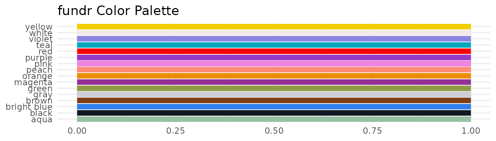
Using Colors in Plots
Direct Color Assignment
Use fundr_colors() to get hex codes for direct use:
# Prepare giving data
giving_by_status <- aggregate(
total_giving ~ donor_status,
data = fundr_portfolio[!is.na(fundr_portfolio$donor_status), ],
FUN = sum,
na.rm = TRUE
)
ggplot(giving_by_status, aes(x = donor_status, y = total_giving)) +
geom_col(fill = fundr_colors("teal")) +
scale_y_currency(short = TRUE) +
labs(
title = "Total Giving by Donor Status",
x = "Donor Status",
y = "Total Giving"
) +
theme_minimal()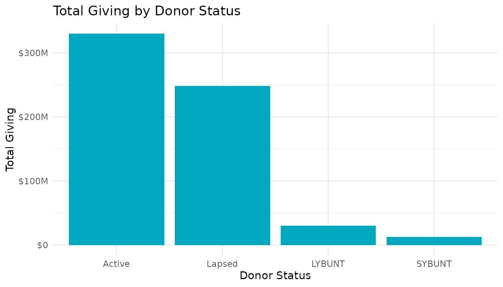
Discrete Scales
Use scale_fill_fundr() or
scale_colour_fundr() for categorical variables:
# Donors by region
region_counts <- as.data.frame(table(fundr_portfolio$region))
names(region_counts) <- c("Region", "Count")
ggplot(region_counts, aes(x = Region, y = Count, fill = Region)) +
geom_col() +
scale_fill_fundr(palette = "secondary") +
labs(title = "Constituents by Region") +
theme_minimal() +
theme(legend.position = "none")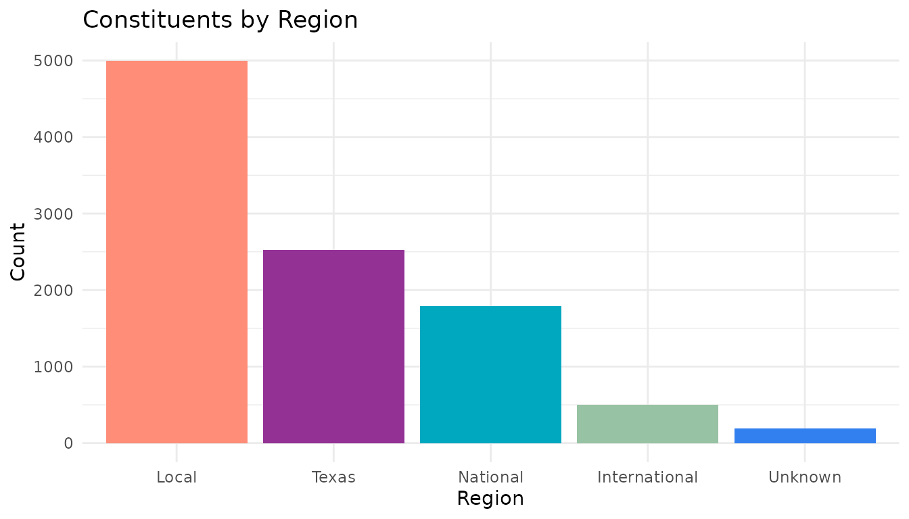
Reversing Palette Direction
ggplot(region_counts, aes(x = Region, y = Count, fill = Region)) +
geom_col() +
scale_fill_fundr(palette = "secondary", direction = -1) +
labs(title = "Constituents by Region (Reversed Palette)") +
theme_minimal() +
theme(legend.position = "none")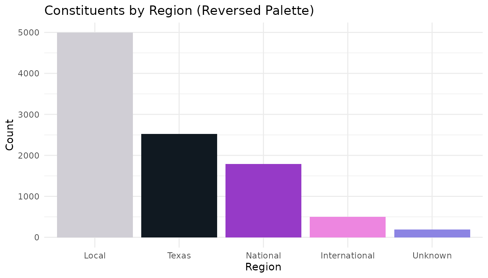
Currency Scales
Format axis labels as currency with scale_y_currency()
and scale_x_currency():
Full Format
# Top giving levels
top_donors <- fundr_portfolio[
!is.na(fundr_portfolio$total_giving) & fundr_portfolio$total_giving > 50000,
]
top_donors <- top_donors[order(-top_donors$total_giving), ][1:10, ]
ggplot(top_donors, aes(x = reorder(constituent_id, total_giving), y = total_giving)) +
geom_col(fill = fundr_colors("teal")) +
scale_y_currency() +
coord_flip() +
labs(
title = "Top 10 Donors by Total Giving",
x = "Constituent ID",
y = "Total Giving"
) +
theme_minimal()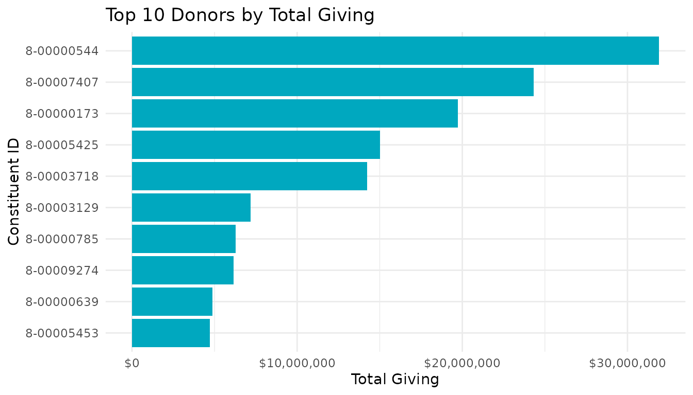
Compact Format
Use short = TRUE for large values:
# Giving by status (larger scale)
ggplot(giving_by_status, aes(x = donor_status, y = total_giving)) +
geom_col(fill = fundr_colors("magenta")) +
scale_y_currency(short = TRUE) +
labs(
title = "Total Giving by Donor Status",
x = "Status",
y = "Total Giving"
) +
theme_minimal()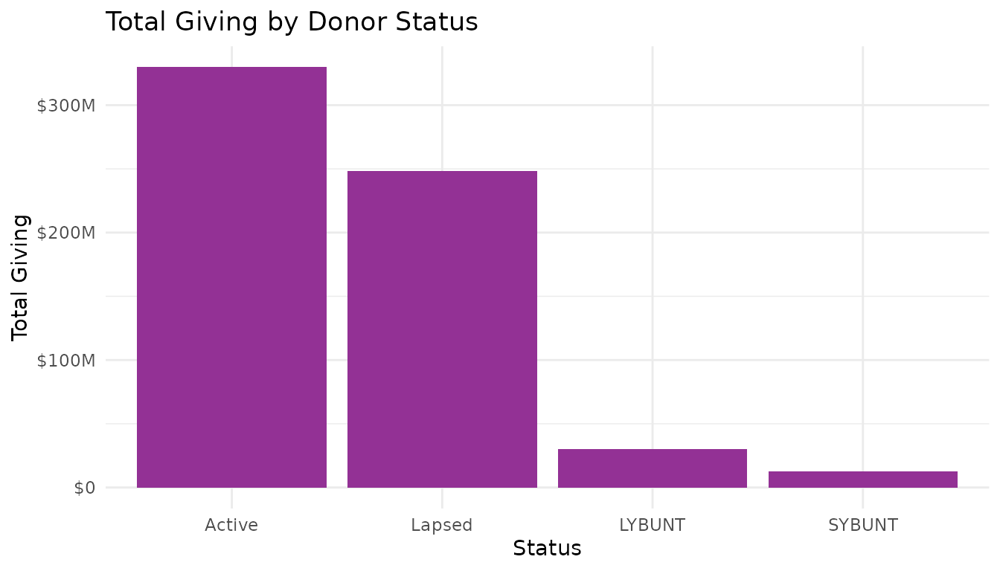
Both Axes
# Scatter plot with currency on both axes
donors <- fundr_portfolio[!is.na(fundr_portfolio$first_gift_amount), ]
donors <- donors[sample(nrow(donors), 500), ] # Sample for performance
ggplot(donors, aes(x = first_gift_amount, y = largest_gift_amount)) +
geom_point(alpha = 0.5, color = fundr_colors("bright blue")) +
scale_x_currency(short = TRUE) +
scale_y_currency(short = TRUE) +
labs(
title = "First Gift vs. Largest Gift",
x = "First Gift Amount",
y = "Largest Gift Amount"
) +
theme_minimal()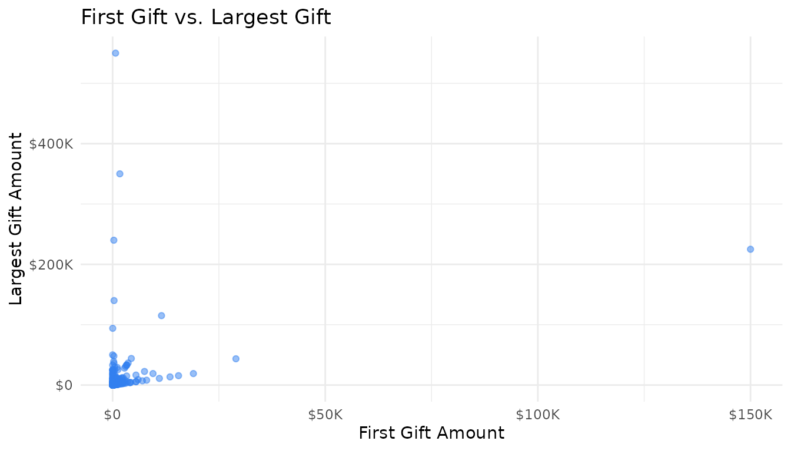
The fundr Theme
theme_fundr() provides a clean, minimal theme suitable
for reports:
ggplot(giving_by_status, aes(x = donor_status, y = total_giving)) +
geom_col(fill = fundr_colors("teal")) +
scale_y_currency(short = TRUE) +
labs(
title = "Total Giving by Donor Status",
subtitle = "All-time giving totals",
caption = "Source: fundr_portfolio",
x = NULL,
y = "Total Giving"
) +
theme_fundr()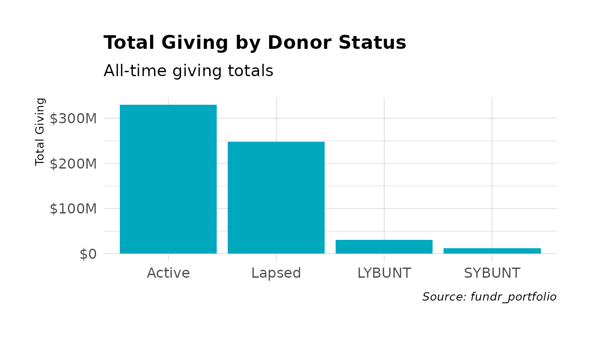
Theme Customization
theme_fundr() accepts many customization options:
ggplot(region_counts, aes(x = Region, y = Count, fill = Region)) +
geom_col() +
scale_fill_fundr(palette = "secondary") +
labs(
title = "Constituents by Geographic Region",
subtitle = "Distribution across the portfolio"
) +
theme_fundr(
grid = "Y", # Only horizontal grid lines
axis = "x", # Only x-axis line
base_size = 11
) +
theme(legend.position = "none")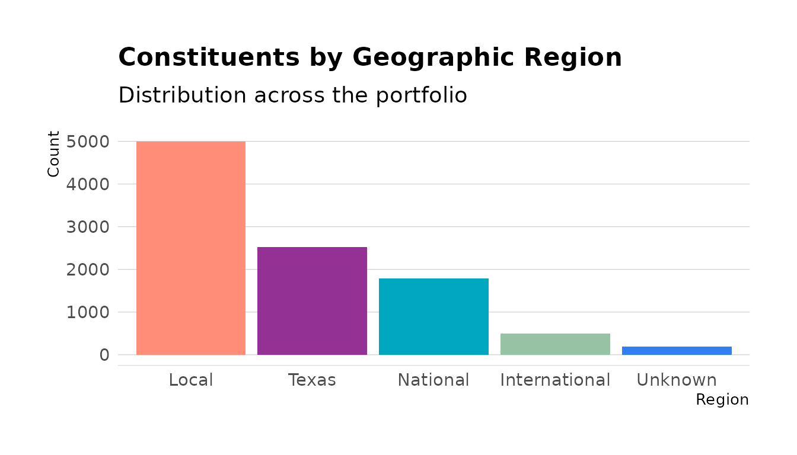
Grid Options
Control which grid lines appear:
# All grid lines (default)
theme_fundr(grid = TRUE)
# No grid lines
theme_fundr(grid = FALSE)
# Only major Y grid
theme_fundr(grid = "Y")
# Major X and Y, minor y only
theme_fundr(grid = "XYy")Axis Options
Control which axes appear:
# No axis lines (default)
theme_fundr(axis = FALSE)
# Both axes
theme_fundr(axis = TRUE)
# Only x-axis
theme_fundr(axis = "x")Legend Helpers
Moving Legend to Bottom
Use legend_bottom() for horizontal layouts:
# Prospect status by region
prospect_data <- fundr_portfolio[!is.na(fundr_portfolio$prospect_status), ]
status_region <- as.data.frame(table(
prospect_data$region,
prospect_data$prospect_status
))
names(status_region) <- c("Region", "Status", "Count")
ggplot(status_region, aes(x = Region, y = Count, fill = Status)) +
geom_col(position = "dodge") +
scale_fill_fundr(palette = "secondary") +
labs(title = "Prospect Status by Region") +
theme_fundr() +
legend_bottom()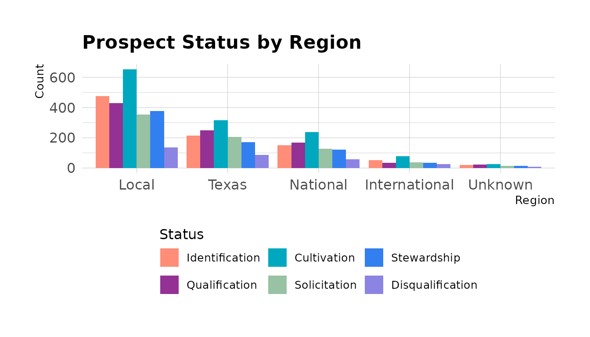
Legend Position
Use legend_position() for other positions:
# Legend on right (default ggplot behavior)
+ legend_position("right")
# Legend on top
+ legend_position("top")
# No legend
+ legend_position("none")Complete Examples
Giving Trend by Fiscal Year
# Get giving by fiscal year
donors <- fundr_portfolio[!is.na(fundr_portfolio$last_gift_date), ]
donors$last_fy <- fy_year(donors$last_gift_date)
fy_giving <- aggregate(
total_giving ~ last_fy,
data = donors,
FUN = sum,
na.rm = TRUE
)
fy_giving <- fy_giving[fy_giving$last_fy >= 2015, ]
ggplot(fy_giving, aes(x = factor(last_fy), y = total_giving)) +
geom_col(fill = fundr_colors("teal")) +
geom_text(
aes(label = format_currency_short(total_giving)),
vjust = -0.5,
size = 3
) +
scale_y_currency(short = TRUE, expand = expansion(mult = c(0, 0.1))) +
labs(
title = "Giving by Last Gift Fiscal Year",
subtitle = "Total giving from donors whose last gift was in each FY",
x = "Fiscal Year",
y = NULL
) +
theme_fundr(grid = "Y")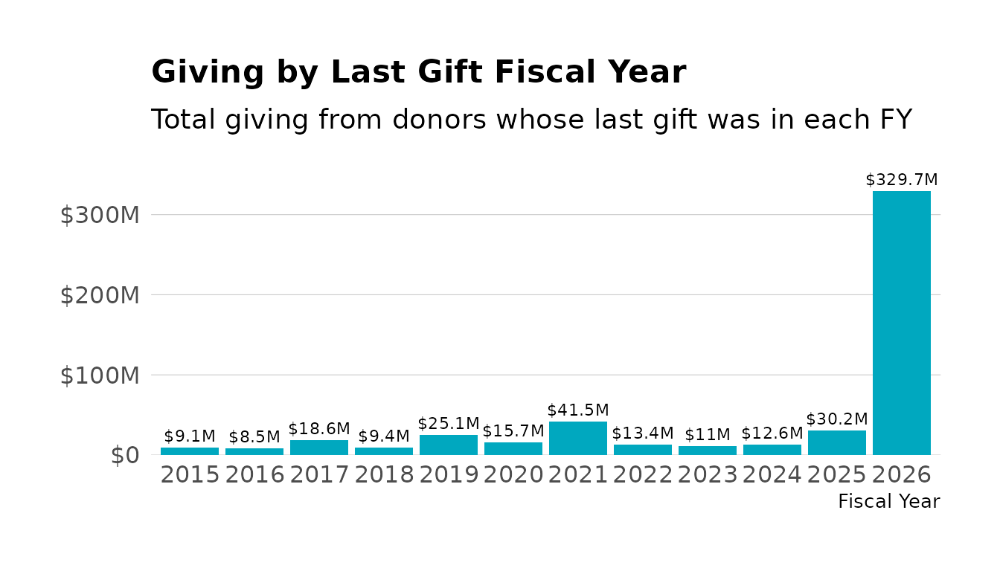
Donor Pipeline
# Pipeline by prospect status
pipeline <- fundr_portfolio[!is.na(fundr_portfolio$prospect_status), ]
pipeline_summary <- as.data.frame(table(pipeline$prospect_status))
names(pipeline_summary) <- c("Stage", "Count")
ggplot(pipeline_summary, aes(x = Stage, y = Count, fill = Stage)) +
geom_col() +
scale_fill_fundr(palette = "secondary") +
coord_flip() +
labs(
title = "Prospect Pipeline by Stage",
x = NULL,
y = "Number of Prospects"
) +
theme_fundr(grid = "X") +
theme(legend.position = "none")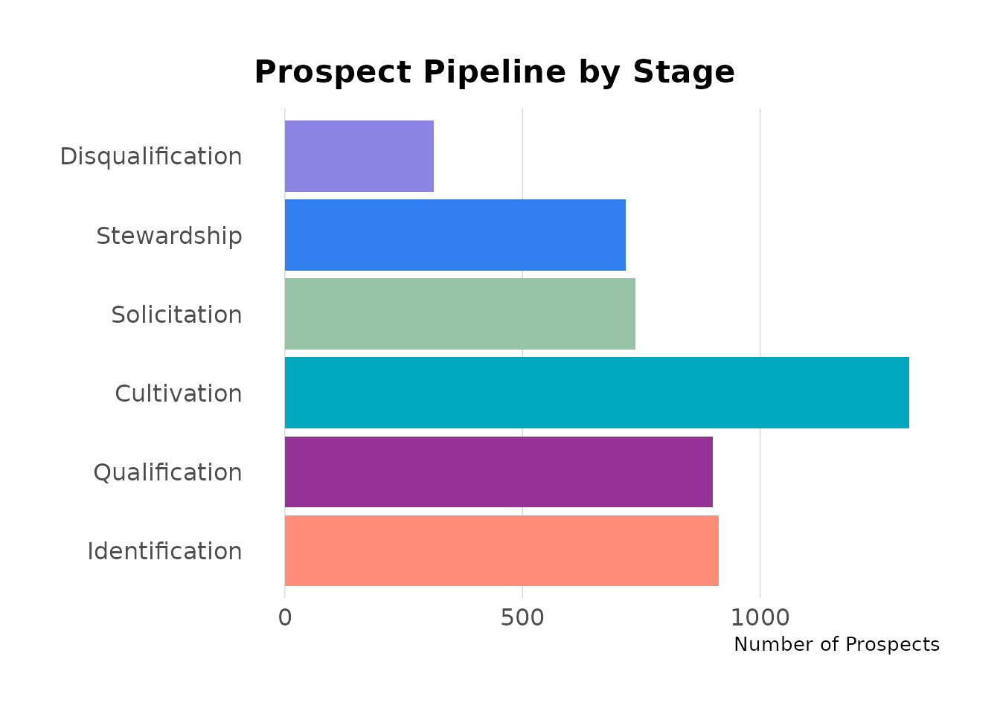
Regional Giving Comparison
# Average total giving by region
regional_giving <- aggregate(
total_giving ~ region,
data = donors,
FUN = mean,
na.rm = TRUE
)
ggplot(regional_giving, aes(x = region, y = total_giving)) +
geom_col(fill = fundr_colors("teal")) +
scale_y_currency(short = TRUE) +
labs(
title = "Average Total Giving by Region",
x = NULL,
y = "Average Total Giving"
) +
theme_fundr() +
theme(axis.text.x = element_text(angle = 45, hjust = 1))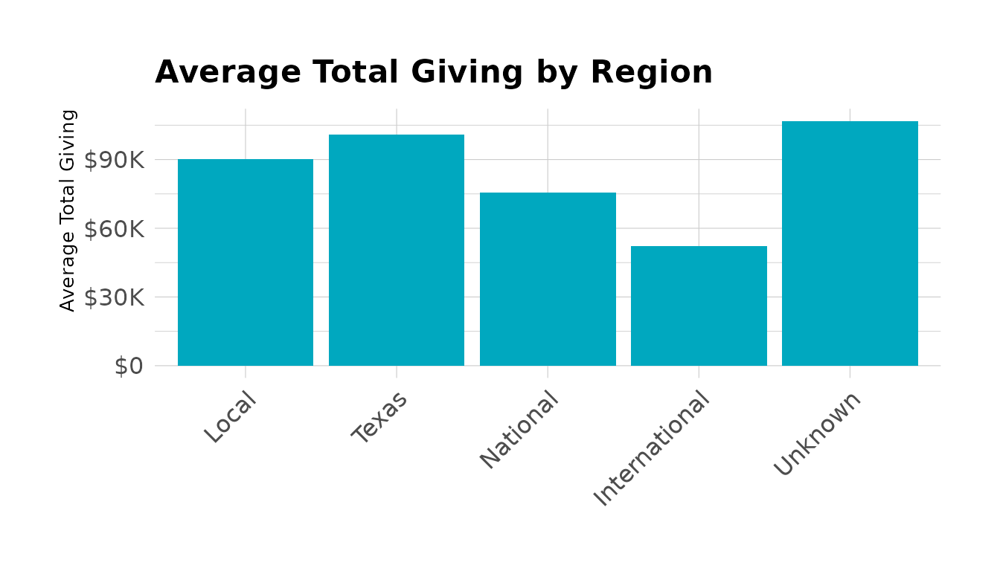
Summary
| Function | Purpose |
|---|---|
fundr_colors() |
Access named hex colors |
fundr_palette() |
Get color vectors for palettes |
scale_fill_fundr() |
Discrete fill scale |
scale_colour_fundr() |
Discrete color scale |
scale_y_currency() |
Format y-axis as currency |
scale_x_currency() |
Format x-axis as currency |
theme_fundr() |
Minimal theme for reports |
legend_bottom() |
Move legend to bottom |
legend_position() |
Control legend position |